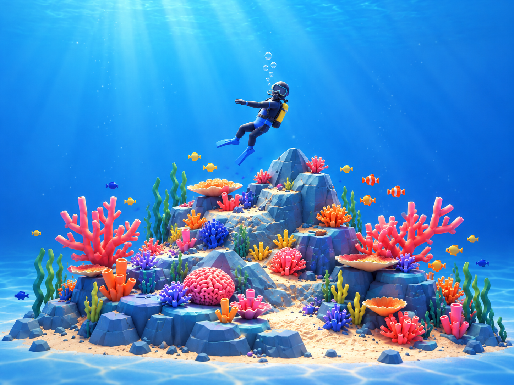

Scroll


平台讀圖,分析輪廓、比例與零件,先堆出 graybox 的山體,確認剪影之後才加細節。

"corals": { "count": 35, "mode": "grow" }, "kelp": { "count": 16, "mode": "grow" }, "palette": "64x64"
模型是能從空場景重建的 Python。說「珊瑚再多一點」,平台改程式、重生成、重新匯出。

在瀏覽器裡拖一下滑桿,場景立刻改變。每個參數都是 JSON,可以存下來、分享、套到下一個模型。

捲動時模型穿過頁面,零件依設定堆起、長出、環繞;游標跟隨與手機 fallback 全部內建。
概念圖 → 可重現的 Blender 模型 → 驗證過的 GLB → 可調光、可捲動的 Three.js 網站。每一步都留下可重跑的檔案。